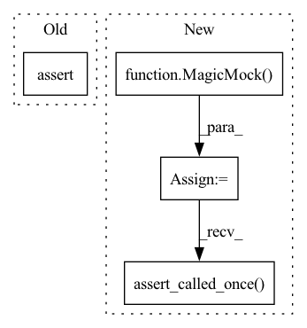

Pattern ID :26873

Before Change
flow_model.initialise()
x = np.random.randn(N, data_dim)
z, log_prob = flow_model.forward_and_log_prob(x)
assert z.shape == (N, data_dim)
assert log_prob.size == N
After Change
x = np.random.randn(5, 2)
log_prob = torch.randn(5)
z = torch.randn(5, 2)
model.model = MagicMock()
model.model.device = "cpu"
model.model.eval = MagicMock()
model.model.forward_and_log_prob = MagicMock(return_value=(z, log_prob))
out_z, out_log_prob = FlowModel.forward_and_log_prob(model, x)
model.model.eval.assert_called_once()
np.testing.assert_equal(out_z, z.numpy())
np.testing.assert_equal(out_log_prob, log_prob.numpy())
In pattern: SUPERPATTERN
Frequency: 4
Non-data size: 4
Instances
Fragment ID: 80220808
Project Name: mj-will/nessai
Commit Name: f443cf53bdddebacbfe16f69c4478c4a66b4a618
Time: 2022-09-04
Author: m.williams.4@research.gla.ac.uk
File Name: tests/test_flowmodel/test_flowmodel_base.py
M Class Name: AnonimousClass
N Class Name: AnonimousClass
M Method Name: test_forward_and_log_prob(1)
N Method Name: test_forward_and_log_prob(3)
M Parent Class:
N Parent Class:
M File Name: tests/test_flowmodel/test_flowmodel_base.py
N File Name: tests/test_flowmodel/test_flowmodel_base.py
M Start Line: 239
M End Line: 245
N Start Line: 294
N End Line: 308
'>
Before Change
Check the upper bounds are correctly set
model.bounds = {"x": [-1, 1], "y": [-1, 1]}
model._upper = None
assert (Model.upper_bounds.__get__(model) == [1, 1]).all()
def test_vectorised_likelihood_true(model):
After Change
def func():
model._upper = np.array([1.0, 1.0])
model._set_upper_lower = MagicMock(side_effect=func)
model._upper = None
bounds = Model.upper_bounds.__get__(model)
model._set_upper_lower.assert_called_once()
np.testing.assert_array_equal(bounds, np.array([1, 1]))
def test_vectorised_likelihood_true(model):
'>
Fragment ID: 80220810
Project Name: mj-will/nessai
Commit Name: 6deebb0a5c5fe77ee3c35152a6623594feeb69bb
Time: 2022-07-07
Author: m.williams.4@research.gla.ac.uk
File Name: tests/test_model.py
M Class Name: AnonimousClass
N Class Name: AnonimousClass
M Method Name: test_upper_bounds(1)
N Method Name: test_upper_bounds(1)
M Parent Class:
N Parent Class:
M File Name: tests/test_model.py
N File Name: tests/test_model.py
M Start Line: 158
M End Line: 160
N Start Line: 174
N End Line: 178
'>
Before Change
Check the lower bounds are correctly set
model.bounds = {"x": [-1, 1], "y": [-1, 1]}
model._lower = None
assert (Model.lower_bounds.__get__(model) == [-1, -1]).all()
def test_upper_bounds(model):
After Change
def func():
model._lower = np.array([-1, -1])
model._set_upper_lower = MagicMock(side_effect=func)
model._lower = None
bounds = Model.lower_bounds.__get__(model)
model._set_upper_lower.assert_called_once()
np.testing.assert_array_equal(bounds, np.array([-1, -1]))
def test_upper_bounds(model):
'>
Fragment ID: 80220811
Project Name: mj-will/nessai
Commit Name: 6deebb0a5c5fe77ee3c35152a6623594feeb69bb
Time: 2022-07-07
Author: m.williams.4@research.gla.ac.uk
File Name: tests/test_model.py
M Class Name: AnonimousClass
N Class Name: AnonimousClass
M Method Name: test_lower_bounds(1)
N Method Name: test_lower_bounds(1)
M Parent Class:
N Parent Class:
M File Name: tests/test_model.py
N File Name: tests/test_model.py
M Start Line: 151
M End Line: 153
N Start Line: 162
N End Line: 166
'>
Before Change
if check_acceptance:
proposal.compute_acceptance.assert_called()
assert proposal.approx_acceptance == [0.4, 0.5]
assert proposal.acceptance == [0.7, 0.8]
else:
proposal.compute_acceptance.assert_not_called()
After Change
proposal.forward_pass = MagicMock(return_value=(worst_z, worst_q))
proposal.radius = MagicMock(return_value=(1.0, worst_q))
proposal.get_alt_distribution = MagicMock(return_value=None)
proposal.prep_latent_prior = MagicMock()
proposal.draw_latent_prior = MagicMock(side_effect=z)
proposal.rejection_sampling = MagicMock(
side_effect=[(a[:-1], b[:-1]) for a, b in zip(z, x)]
)
proposal.compute_acceptance = MagicMock(return_value=0.8)
proposal.model = MagicMock()
proposal.model.batch_evaluate_log_likelihood = MagicMock(
return_value=log_l
)
proposal.plot_pool = MagicMock()
proposal.convert_to_samples = MagicMock(
side_effect=lambda *args, **kwargs: args[0]
)
x_empty = np.empty(poolsize, dtype=proposal.population_dtype)
with patch(
"nessai.proposal.flowproposal.empty_structured_array",
return_value=x_empty,
) as mock_empty:
FlowProposal.populate(proposal, worst_point, N=10, plot=True)
mock_empty.assert_called_once_with(
poolsize,
dtype=proposal.population_dtype,
)
proposal.forward_pass.assert_called_once_with(
worst_point,
rescale=True,
compute_radius=True,
)
proposal.radius.assert_called_once_with(worst_z, worst_q)
assert proposal.r == 1
proposal.prep_latent_prior.assert_called_once()
draw_calls = 3 * [call(5)]
proposal.draw_latent_prior.assert_has_calls(draw_calls)
'>
Fragment ID: 80220812
Project Name: mj-will/nessai
Commit Name: 7b9d97a697e51cb9ac741c134a59c3cd3b440f59
Time: 2023-02-13
Author: m.williams.4@research.gla.ac.uk
File Name: tests/test_proposal/test_flowproposal/test_flowproposal_population.py
M Class Name: AnonimousClass
N Class Name: AnonimousClass
M Method Name: test_populate(3)
N Method Name: test_populate(3)
M Parent Class:
N Parent Class:
M File Name: tests/test_proposal/test_flowproposal/test_flowproposal_population.py
N File Name: tests/test_proposal/test_flowproposal/test_flowproposal_population.py
M Start Line: 337
M End Line: 412
N Start Line: 332
N End Line: 369